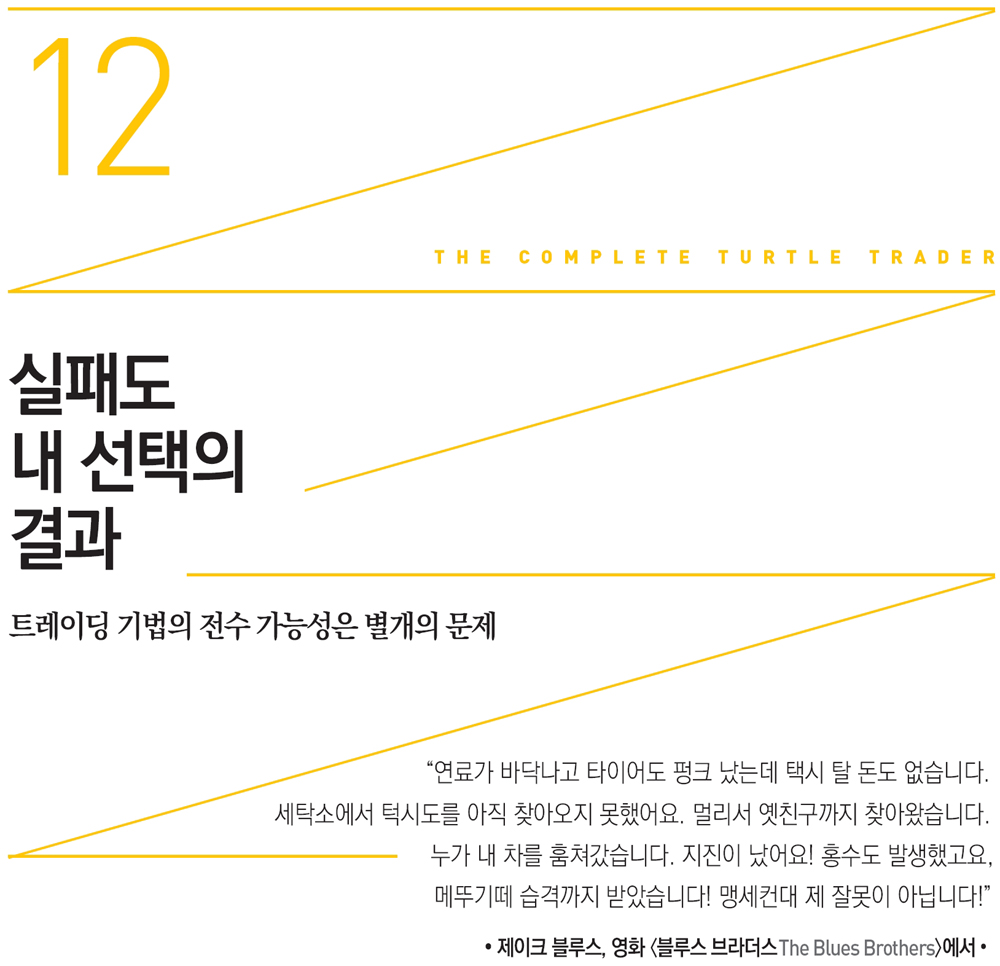

다른 친구들이 성공가도를 달리는 사이 몇몇 터틀이 자존심과 헛된 기대감에 사로잡혀 무너졌다. 그 이유를 파악한다면 장기적으로 성공을 거두는 데 필요한 것이 무엇인지 알 수 있을 것이다. 리즈 체블이 솔직히 말했다. “터틀 프로그램에서 가장 흥미로운 점은 성공한 친구가 있는 반면 그렇지 못한 사람이 있다는 사실입니다.”
리처드 데니스는 2005년에 진행했던 인터뷰에서 다음과 같이 털어놓았다. “뒤돌아보면 우리가 선발한 수련생들은 서로 별 차이가 없었습니다. 터틀 프로그램 이후 트레이딩을 지속한 친구들은 대부분 자신의 능력 덕분에 그렇게 된 것입니다. 비록 우리의 관리 감독을 받았지만 이들이 본질적으로 똑똑하다는 점에서는 차이가 거의 없었습니다.”
사실 리처드 데니스가 터틀들이 본질적으로 똑똑하다고는 말했지만, 잘 고안된 트레이딩 프로그램을 실행할 때에는 똑똑할 필요가 없다는 점을 분명히 밝혔다. “훌륭한 트레이더는 시스템을 개발할 때에는 총명함을 최대한 발휘해야 하지만 일단 만든 시스템을 돌릴 때에는 바보 같아도 됩니다. 멍청이처럼 따라야 한다는 뜻입니다. 시스템을 만들 때에는 미친 듯이 일하고 이를 작동시킬 때에는 돌부처처럼 묵묵히 따르세요. 조지 부시 대통령도 좋은 시스템이 있다면 훌륭한 트레이더가 될 수 있습니다.”
다른 사람들은 전혀 다르게 생각했다. 커티스 페이스, 그리고 터틀 스토리의 조연이라 할 수 있는 데이비드 체블은 리처드 데니스의 ‘누구나 매매를 잘할 수 있다’는 전제를 받아들이지 않았다. 데니스가 이 내용을 실제 증명했는데도 말이다.
터틀 스토리는 위 논쟁을 어중간한 선에서 끝내지 않았다. 리처드 데니스는 위대한 트레이더는 타고난 것이 아니라 후천적 교육으로 가능함을 확실히 증명했다. 하지만 프로그램을 뒤로 하고 세상에 나온 터틀들은 각자 다른 방식으로 자신들의 명성을 활용하려 했다. 이들의 행동을 보면 큰돈을 벌려면 무엇을 하면 안 되는지에 대한 흥미로운 통찰력을 얻을 수 있다.
나중에 드러난 사실이지만 리처드 데니스의 트레이딩 규칙을 판 사람은 러셀 샌즈만이 아니었다. ‘원조 터틀’임을 자처하는 커티스 페이스는 2003년 4월 웹사이트를 개설하면서 터틀 규칙을 무료로 제공하겠다고 홍보했다. 내용이 쓸모 있다고 여기는 사이트 방문자들이 “리처드 데니스와 빌 에크하르트, 그리고 다른 원조 터틀들을 기리는” 명목으로 자선단체에 기부하는 조건이었다.
커티스 페이스는 직접 거명하지는 않았지만 터틀 시스템을 팔아먹은 러셀 샌즈를 비판했다. “사실 리처드 데니스와 빌 에크하르트의 작품을 허락 없이 이용해 돈을 챙긴 사람이 있어서 늘 당혹스러웠습니다.”
하지만 트레이딩 규칙을 팔아 자선단체에 기부하는 행위에 리처드 데니스가 동의했다는 증거도 없다. 본인이 만든 트레이딩 룰이 온라인에서 공짜로 제공되고 있는 부분에 대해 묻자 리처드 데니스는 체념한 투로 대답했다. “미시간 거리를 걷다가 그 내용에 대해 말하는 사람을 보았습니다. 제가 만든 시스템을 접하고 저의 축복을 받았다고 여기고 있음이 분명해 보였죠. 그러니 제가 뭘 어쩌겠습니까?”
하지만 커티스 페이스의 기부는 곧 돈벌이로 탈바꿈했다. 2006년에 방향을 틀어 웹사이트 방문자에게 더 이상 기부를 요구하지 않았다. 대신 온라인에서 리처드 데니스의 트레이딩 규칙을 29.95달러에 팔았다. 커티스 페이스와 그의 회사는 자신이 비판했던 러셀 샌즈의 행위를 되풀이했다. 더욱이 그는 러셀 샌즈가 트레이딩에서 수익을 제대로 내지 못했다고 비난했지만 본인이 성공적으로 매매했다는 증거도 내놓지 못햇다.
커티스 페이스는 부침이 심한 과거 경력을 설명할 때 16년 전 터틀로 있을 무렵에 번 돈을 거론했다. “여러분들은 이렇게 생각하겠죠. ‘수백만 달러나 벌었다는데 다 어디로 갔을까?’ 절반 이상은 세금으로 냈고 4분의 1은 자선단체에 기부하거나 아버지를 돕는 데 썼습니다. 나머지 돈은 이런저런 사업에 들어갔죠.” 그는 자기 수익의 가장 큰 부분이라고 할 수 있는 200만 달러를 소프트웨어 회사에 투자했다고 밝혔다.
커티스 페이스는 온라인 채팅방을 통해 이 소프트웨어 회사(나중에 미 증권거래위원회의 집중 조사를 받았다)가 어떻게 파산했는지 밝혔다. 그는 파산 원인을 새로 채용한 CEO 탓으로 돌렸다. 당시 그에게는 개인적인 문제도 있었다. “저는 이혼소송 중이었고 무위험 자산의 많은 부분을 전 아내에게 줬습니다. 여전히 그녀를 사랑해 좋게 헤어지면서 집과 포르쉐 자동차를 그대로 넘겨줬죠. 말하자면 지금은 그때만큼 돈이 없습니다. 하지만 대부분의 사람보다 형편이 낫기 때문에 불만은 없습니다.”
그렇지만 커티스 페이스가 2003년 주식투자로 돈을 잃었고 직원 불만이 컸으며 파산 상태일지도 모른다는 얘기들이 인터넷에 돌았다. 그는 2004년 자신이 재정적으로 어려움을 겪고 있다는 소문에 대해 이렇게 해명했다. “저는 무일푼은 아닙니다. 지난 수년 동안 현금이 거의 바닥나기 직전까지 간 적이 몇 번 있었지만 파산하지는 않았습니다. 설령 제가 돈 한 푼 없다 치더라도, 소프트웨어를 팔고 있고 파산하지 않는 방법에 대해 조언하지도 않았으니 문제될 것이 없다고 봅니다.”
그 뒤 얼마 지나지 않아 커티스 페이스는 1988년 리처드 데니스 품을 떠난 후 처음으로 트레이딩 사업을 시작했다. 〈헤지펀드 데일리Hedge Fund Daily〉는 커티스 페이스와 유리 플리암Yuri Plyam 증권사가 엑셀러레이션 머큐리Acceleration Mercury 4X LP라는 헤지펀드를 새로 설립했다는 사실을 머리기사로 보도했다. 이 헤지펀드는 투자 기간이 서로 다른 세 가지 운용 전략이 있었다. 하나는 1~2일, 다른 하나는 10~15일, 나머지는 수개월에서 수년이었다.
복귀 배경은 어떻게 설명했을까? 커티스 페이스는 15년간의 공백을 딛고 트레이딩 업계로 돌아온 이유에 대해 트레이딩 기술의 혁신적 발전을 활용하기 위해서였다고 밝혔다. 그는 고객들이 자신에게 돈을 맡겨야 하는 이유를 다음과 같이 제시했다. “옛날에는 트레이더들이 종일 스크린을 쳐다봐야 했지만 지금은 그렇게 하지 않아도 높은 수익을 올릴 수 있습니다.”
커티스 페이스는 은퇴생활을 접고 새 펀드를 모집한다고 온라인 채팅 룸에서 자신 있게 말했다.
커티스 페이스는 빠른 시일 내에 1억 달러를 모집하겠는 포부를 밝혔지만 엑셀러레이션 캐피탈은 100만 달러에도 미치지 못하는 금액으로 운용을 시작했다. 사실 100만 달러는 헤지펀드치고는 아주 작은 규모다. 이 펀드는 큰 손실을 기록했을 뿐만 아니라 얼마 운용하지도 못하고 청산되고 말았다.
불행히도 청산은 저조한 성과 때문만은 아니었다. 미 증권거래위원회와 비슷한 금융 감독기관인 상품선물거래위원회가 이 펀드에 대해 조사하기 시작했다.
엑셀러레이션과 같은 사무실을 쓰던 캐슬 트레이딩Castle Trading 소속의 토비 웨인 데니스턴Toby Wayne Denniston이 엑셀러레이션 캐피탈의 고객 자금을 횡령했다. 이 직원은 2004년 11월부터 2005년 8월까지 엑셀러레이션 캐피탈의 고객 계좌에서 19만 883달러를 착복했다. 그는 수표를 위조하고 회사의 은행 계좌와 거래 내역을 조작해 횡령 사실을 은폐했다.
2007년 1월 16일 감독기관은 웨인 데니스턴의 위법 행위에 엑셀러레이션 캐피탈도 책임이 있다는 내용의 추가 조사 결과를 발표했다. 이로써 엑셀러레이션 캐피탈은 항구적 고객 자금 운용 금지와 21만 8,000달러의 벌금형 처분을 받았다. 유리 플리암도 벌금형과 상품펀드 관리 업무 3년 금지 처분을 받았다. 2007년 6월에도 상품선물거래위원회 조사는 계속 이어졌으며, 공개되지 않은 관련 진술서만 해도 869건, 금융 거래 기록은 694건, 거래 내역은 200쪽에 달했다.
커티스 페이스는 지난 20년 동안 가장 성공한 트레이더 중 한 명으로 남을 만한 인물이었지만 분명 제리 파커에 비해 뭔가가 부족했다. 몇몇 터틀이 어려움을 겪는 모습을 본 저자 잭 슈웨거는 《시장의 마법사들》에서 만들어낸 전설에 대해 다른 평가를 내렸다. 그는 내게 이렇게 털어놓았다. “대중에게 알려진 만큼의 기적은 없다고 생각합니다. 마술 같은 것도 없고 터틀 프로그램을 출범시킨 창시자들 이외에는 정말 재능이 탁월한 터틀 수련생들도 없지 않나 싶습니다.”
터틀 프로그램 종료 뒤 트레이딩에서 결코 뛰어난 실적을 거두었다고 할 수 없는 커티스 페이스와 다른 터틀들에 대해서는 잭 슈웨거의 지적이 맞을 수 있다. 하지만 윌리엄 에크하르트와 적어도 다른 여섯 명의 터틀은 20년간 의심의 여지없이 눈부신 실적을 거두었다.
어쨌든 터틀들이 세상의 모든 트레이딩 규칙을 가졌다 하더라도 게으르거나 사업 수완이 없거나 열의가 부족하거나 헤쳐 나가는 능력이 없다면, 트레이딩이나 다른 어떤 사업에서 실패한다 하더라도 이는 놀랄 일이 아니다.
그렇지만 초기 터틀 몇 명의 성공과 실패 사례를 기준으로 리처드 데니스가 주장한 트레이딩 기법의 전수 가능성에 대해 결론지을 수는 없다. 터틀 스토리는 투자 역사의 흥미로운 한 페이지에 불과할 뿐, 우리에게 대단한 시사점을 주지 못한다고 치부할 수도 있다. 핵심 쟁점은 터틀들이 리처드 데니스 밑에서 배우고 아주 성공적으로 응용했던 투자 기법을 다시 전수할 수 있는지 여부다.
다행히 리처드 데니스의 트레이딩 기법의 진정한 전수 가능성에 대해 고무적인 증거를 제시한 사람이 적어도 한 명은 있다. 그는 리처드 데니스나 윌리엄 에크하르트와 직접적 연결고리는 없었지만 열심히 노력하면 트레이딩으로 엄청난 돈을 벌 수 있다는 사실을 여실히 보여줬다. 그는 텍사스주 북쪽 지역의 한산한 작은 마을에서 성공을 이루어냈다. 리처드 데니스의 초장기 실험을 더욱 널리 응용할 수 있는지에 대해 의문을 지녔던 사람들이라면 2세대 터틀의 성공 앞에서 다른 구실을 찾아야 할 것이다. 바로 살렘 에이브러햄Salem Abraha이 그 주인공이다.